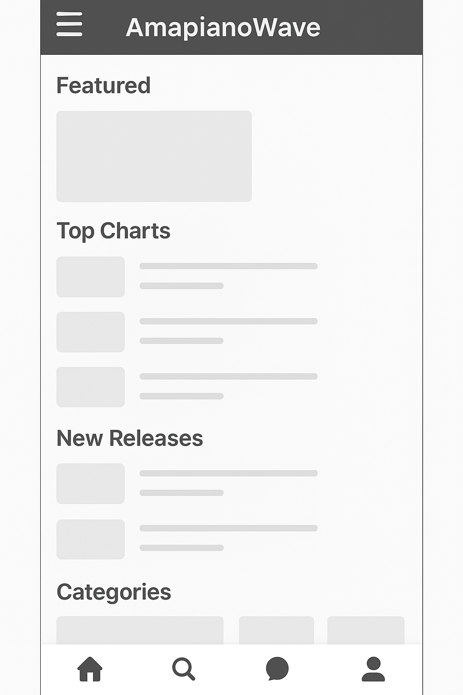

Site Name
AmapianoWave
I chose this name because it represents the “wave” of Amapiano music in South Africa and globally. The name is easy to remember and clearly communicates the purpose of the site.
Optional Domain: amapiaonowave.com (not required for this class)
Site Purpose
The purpose of this site is to provide users with a dedicated Amapiano streaming platform. It will allow people to listen to Amapiano songs, discover trending artists, explore playlists, and enjoy an ad-free listening experience. Users will also be able to create accounts, save favorite tracks, and explore new music across mobile and desktop devices.
Scenarios
- “Where can I find the newest Amapiano tracks and trending playlists?”
- “How do I create an account to save my favorite songs and artists?”
- “Which Amapiano artists are currently popular in South Africa?”
- “How do I discover Amapiano music based on mood or activity?”
Color Scheme
Primary Color: #111111 – Used for header background, navigation bar, and footers.
Secondary Color: #DDAA00 – Used for buttons and highlighted text.
Body Background: #FFFFFF – Clean, readable background.
Text Color: #222222 – Strong contrast for accessibility.
These colors reflect Amapiano culture — bold, modern, and urban. The gold accent highlights premium elements such as playlists and artist cards.
Typography
Primary Font: Poppins
Used for headings, buttons, and titles — modern and clean.
Secondary Font: Roboto
Used for body text because it is highly readable on both mobile and desktop.
You can add them with Google Fonts in your real project.
Wireframe
Desktop View
(Insert hand-drawn wireframes or simple digital mockups here. They do not need to be detailed.)